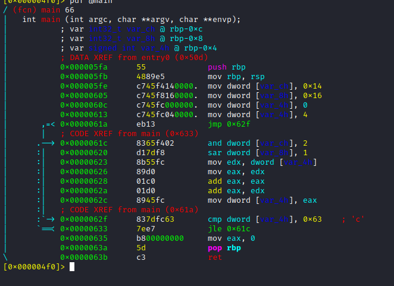
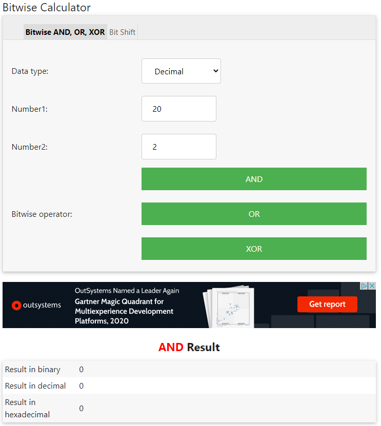
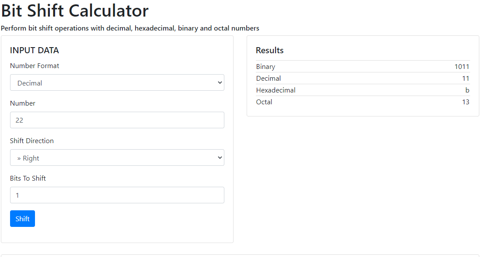
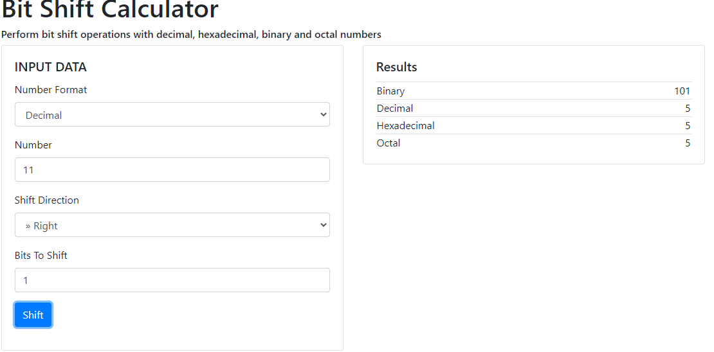
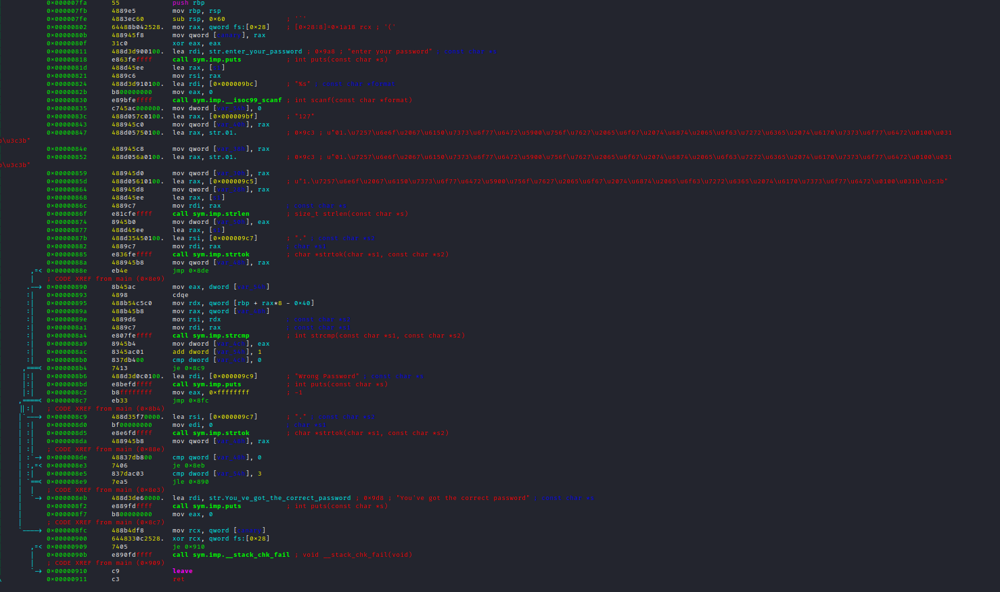

Tarefa 4
#1
Em esta pergunta é nos perguntado qual é o valor da variavel com o nome var_8h antes das
instruções popq e ret.

Bem primeiro o programa começa por declarar 3 variáveis. (Instrução
mov )
var_ch = 0
var_8h = 99 (63 em hex)
var_4h = 1000 (3e8 em hex)
Depois de fazer isso move o valor de var_ch para eax Depois compara
eax (valor de var_ch) com a variável var_8h (valor de 99) que
basicamente o que vai fazer é subtrair os dois se forem iguais vai ser sempre 0. E se forem iguais a
flag ZERO FLAG vai ser true. Depois usa a instrução
JGE que quer dizer jump if condition greater or equal
ou seja se for maior ou igual salta para o endereço 0x629 que é falso (0>=99 == FALSO)
então segue o programa Depois
eax é igual a var_8h (99) e faz a mesma comparação e volta a ver falso
então não faz o salto para o endereço. Depois faz uma operação binária chamada
and usei uma calculadora online para se tornar mais
fácil. 
Que nos dá o valor de 96 e depois de isso não usamos mais a variável var_8h portanto a resposta é
96
#2
A segunda pergunta é nos perguntado qual o valor de 0 antes das intruções
pop e
ret ou seja antes de a função terminar.
E como podemos ver o valor de
var_ch só muda uma vez que é var_ch=0 portanto a
resposta é 0. #3
A terceira pergunta quer saber qual o valor de
var_4h antes da função terminar.
Então primeiro a variável
var_4h é igual a 1000. 0x60c Depois compara
0>=99 que é falso. 0x61b
Depois compara
99>=1000 que é falso. 0x621
Depois faz um salto para o endereço
0x630
Que subtrai
var_4h por 0x3e7 ou 999
E o resultado da variavel
var_4h fica 1
A reposta fica então
1
#4
A quarta e ultima pergunta qual é o simbolo do
AND entre estes (+, -, *, /, &, |)
Reposta:
&
Tarefa 5

Então são declaradas 3 variáveis
var_8h
var_ch
var_4h
Depois o programa salta para o endereço 0x62f (jmp 0x62f)
Depois de isso compara a variável
var_4h que tem o valor de 0 com
22 se for menor ou igual vai para o endereço 0x61c. jle = jump if low or equal
Como é verdade vai saltar para o endereço 0x61c
Depois no endereço 0x61c vai fazer a operação binária AND na variável
var_ch que tem o valor de 14 depois de essa operação essa variável fica com o
valor de 0

Depois faz a operação lógica
SAR com o valor de 1 na variavél var_8h que dá o
resultado 11

Feito isso mete o valor de
var_4h em edx e depois edx em
eax ou seja eax = 4
depois adiciona eax + eax que dá 8. Depois adiciona
eax + edx que dá 12 Depois move
eax para a variável var_4h
E compara
var_4h e compara com 22 outra vez e vê se é menor ou igual com é verdade salta
para o endereço 0x61c
Depois faz novamente o mesmo
Faz a operação lógica
AND na variável var_ch
que volta a dar zero. 
Operação lógica na variável
var_8h que dá 5. E já vamos na segunda volta por isso já temos a resposta nr 1
Resposta #1 = 5
Também nos é perguntado qual o valor devar_ch na segunda volta do loop e nós já sabemos é
0.
Resposta #2 = 0
Depois é nos pergunta qual o valor devar_8h antes de sair da função. Então vamos continuar a ler o programa.
Depois adiciona 8 (que são basicamente todas as operações feitas anteriormente) á variavel
var_4h que dá 12+8=20.
Depois vai comparar com 22 e ver se é menor ou igual se for volta para o endereço 0x61c
E é verdade então volta a fazer os calculos.
Faz a operação lógica AND na variavél var_ch que é 0.
Faz o bit shift na var_8 que dá 2.
Ou seja depois var_4h vai ser maior que 22 por isso esta é a ultima vez do loop.
Resposta #3 = 2
Depois é nos perguntado qual o valor de var_ch. E já sabemos que vai é 0.
Resposta #4 = 0
Tarefa 6
Nesta tarefa temos de fazer um simples crackme. 
Bem eu vou usar a técnica das funções vou ver as funções usadas para poder imaginar o que está a acontecer.
Então primeiro temos a função
call sym.imp.puts que provavelmente é a função a pedir a palavra passe do crackme. enter your password
Depois temos a função
scanf
Depois a função
call sym.imp.strlen que server para nos dizer quantos caracteres tem um palavra.
Depois a função
call sym.imp.strtok que separa as palavras por um caracter mais info em - https://www.tutorialspoint.com/c_standard_library/c_function_strtok.htm Depois a função
strcmp que compara duas strings.